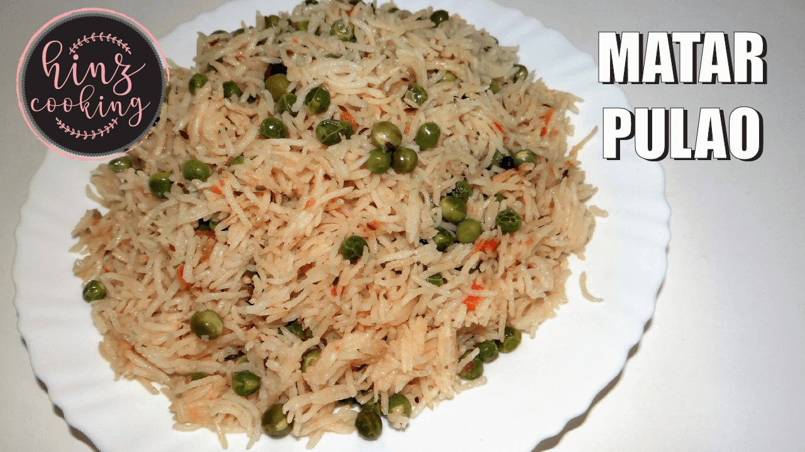

Mutter Pulao Recipe

Bring the delicious aroma fresh green peace of your table with this recipe!
Ingredients:
2 cups basmati rice
2 tbsp ghee
1 tbsp cumin seeds
1 tbsp shredded ginger
2 cups shelled peas
2 tsp coriandar powder
1 tsp garam masala
salt to taste
1 tsp turmeric powder
Water
Instrution:
Wash the basmati rice well.
Soak it in warm water for an hour.
Strain the rice and set aside.
Heat the ghee in a heavy pen,and fry the cumin seeds in ginger.
Add the peas,garam masala,salt,turmeric and rice and stir well.
Saute for about a minute.
Pour and sour cups of water,and allow it to boil
Then ,lower the flame and allow the mixture to simmer.